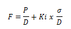

Fracture Gradient Determination – SURFACE APPLICATION
Method 1 : Mattews and Kelly Method

Where, F = fracture gradient (psi/ft)
P = formation pore pressure (psi)
σ = matrik stress at point of interest (psi)
D = depth at point of interest TVD (ft)
Ki = matrix stress coefficient, dimensionless
Procedure :
F (psi) = F x D
Case : Casing setting depth = ft
Formation pore pressure = ppg
(Louisiana Gulf Coast)
Method 2 : Ben Eaton Method
Where, S/D = overburden gradient, psi/ft
Pf/D = formation pressure gradient at depth of interest, psi/ft
y = Poisson’s ratio
Procedure :
psi = F x D
Example : Casing setting depth = ft
Formation pore pressure = ppg
FRACTURE GRADIENT DETERMINATION – SUBSEA APPLICATIONS
In offshore drilling operations, it is necessary to correct the calculated fracture gradient for the effect of water depth and flowline height (air gap)above mean sea level. The following procedure can be used :
Case : Air gap = ft
Density of seawater = ppg
Water depth = ft
Feet of casing below mudline = ft
Procedure :
gradient from mean sea level to casing setting depth :
From chart : Enter chart at 6000 ft on left ; intersect curved line
And read overburden gradient at bottom of chart :
Overburden stress gradient =
c. Determine equivalent land area1 (ft) :
2. Determine depth for fracture gradient determination :
at a depth of 5006 ft :
From chart : Enter chart at a depth of 5006 ft; intersect the 9.0 ppg
line; then proceed up and read the fracture gradient at the
top of the chart :
Fracture gradient =